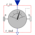

TansformRelativeVectorObsolete model will be removed in future versions, use TransformRelativeVector instead! |

|
Diagram
{kind=link}
Information
This information is part of the Modelica Standard Library maintained by the Modelica Association.
Parameters (2)
| frame_r_in |
Value: Modelica.Mechanics.MultiBody.Types.ResolveInFrameAB.frame_a Type: ResolveInFrameAB Description: Frame in which vector r_in is resolved (world, frame_a, frame_b, or frame_resolve) |
|---|---|
| frame_r_out |
Value: frame_r_in Type: ResolveInFrameAB Description: Frame in which vector r_in shall be resolved and provided as r_out (world, frame_a, frame_b, or frame_resolve) |
Connectors (5)
| frame_a |
Type: Frame_a Description: Coordinate system a |
|
|---|---|---|
| frame_b |
Type: Frame_b Description: Coordinate system b |
|
|  | frame_resolve |
Type: Frame_resolve Description: Coordinate system in which r_in or r_out is optionally resolved |
| r_in |
Type: RealInput[3] Description: Input vector resolved in frame defined by frame_r_in |
|
| r_out |
Type: RealOutput[3] Description: Input vector r_in resolved in frame defined by frame_r_out |
Components (2)
| basicTransformVector | ||
|---|---|---|
| zeroPosition |
Type: ZeroPosition |